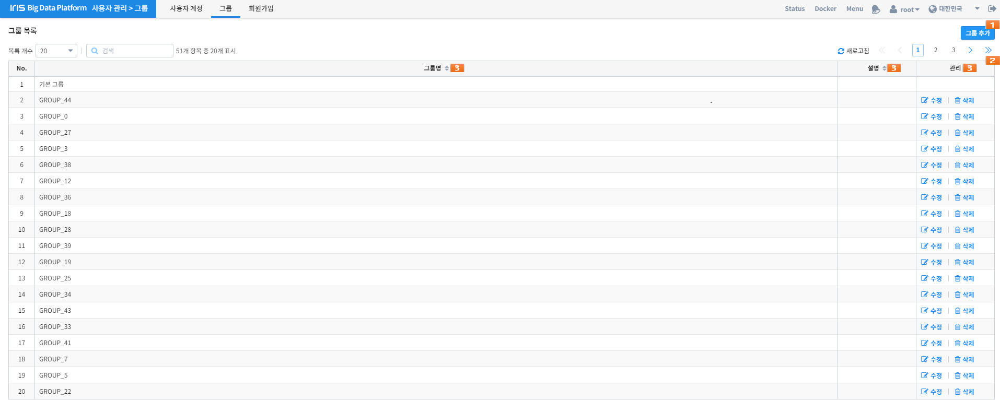
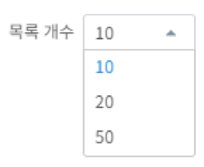
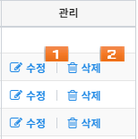

그룹¶
함께 일하는 사용자들을 하나로 묶기 위한 기능입니다. 그룹 생성은 super user(일반적으로 root 계정)만 가능합니다.
| 번호 | 구분 | 설명 | |
|---|---|---|---|
| 1 | 그룹 추가 | 새로운 그룹를 추가합니다. 추가 다이얼로그를 팝업합니다. | |
| 2 | 목록 설정 | 그리드에 표시되는 항목들을 필터링하거나 선택할 수 있습니다. | |
| 3 | 그룹 목록 | 그룹명 | 그룹의 이름 |
| 설명 | 설명 혹은 비고 | ||
| 관리 | 계정 수정/삭제 기능 | ||
그룹 조회¶
현재 등록된 그룹들을 조회합니다. 상단의 “새로고침” 버튼을 누르면 목록이 갱신 됩니다. 접속된 계정에 따라 조회되는 계정은 아래와 같습니다.
| 역할 | 조회 계정 |
|---|---|
| 관리자 | 모든 그룹 |
| 그룹장 | 사용자 해당 계정이 속한 그룹 |
또한 그룹 관리에 필요한 편의 기능들을 제공합니다.
Option 1: 목록 개수¶
한 페이지에 표시되는 목록의 개수를 지정합니다.


그룹 생성¶
새로운 그룹을 생성합니다. 상단에 “그룹 추가” 버튼을 누르면 그룹을 생성 할 수 있는 다이얼로그가 표시 됩니다. 필수/선택 항목을 입력한 뒤에 저장 버튼을 누르면 그룹이 생성 됩니다. 생성은 super user(일반적으로 root 계정)만 가능합니다.
각 입력란의 필수 입력 여부는 다음과 같습니다.

| 항목 | 필수 입력 |
|---|---|
| 그룹명 | O |
| 설명 |
그룹 관리¶
그룹을 관리하는 기능입니다. 그룹 관리 기능은 아래와 같습니다.
| 수정 | 그룹의 정보 수정은 super user(일반적으로 root 계정)만 가능합니다. 조회 목록에서 특정 그룹의 “수정” 버튼을 클릭하면 화면에 수정 다이얼로그가 표시되고, 항목을 수정한 뒤에 저장 버튼을 누르면 수정 내용이 반영됩니다. 단, 기본 그룹은 수정 및 삭제가 불가능합니다. |
| 삭제 | 특정 그룹을 삭제합니다. |
그룹 편집¶
그룹의 정보 수정은 super user(일반적으로 root 계정)만 가능합니다. 조회 목록에서 특정 그룹의 “수정” 버튼을 클릭하면 화면에 수정 다이얼로그가 표시되고, 항목을 수정한 뒤에 저장 버튼을 누르면 수정 내용이 반영됩니다. 단, 기본 그룹은 수정 및 삭제가 불가능합니다.